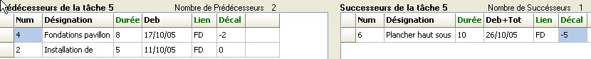
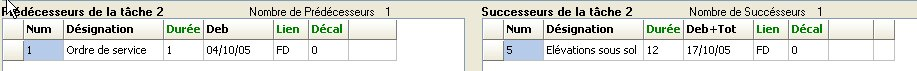
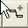
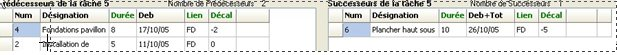
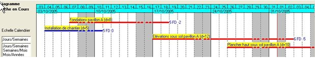
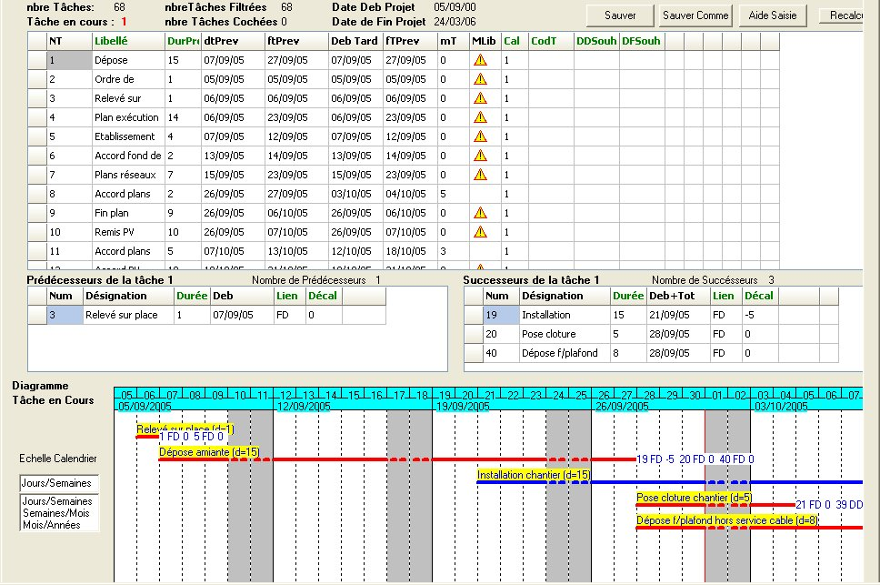

2 Création modification d'un Projet
2.1 Créer un fichier d'un nouveau projet, l'enregistrer
2.2 choisir un calendrier
2.3 Onglet " Saisie Prévisionnelle "
2.4 Saisir les données des tâches du projet les ordonner entre-elles
2.5 Onglet " Gantt Prévisionnel "
2.1 Créer un fichier d'un nouveau projet, l'enregistrer
Dès le choix" Nouveau projet" du Menu " Fichier " va s'affiche dans la boîte de dialogue ci-dessous qui :
apparaît, vous allez pouvoir saisir :
son code (avec choix d'un répertoire) choisir...........Exemple........répertoire Nouveau dossier
son titre ........................................................................Opération de construction de la structure de 4 pavillons
un commentaire............................................................Avec procédure de recopie des tâches en cacades
la date de début du projet............................................le 02/01/06
Dés que vous aurez sur la touche "Sauver /continuer " vous visualiserez l'onglet " Saisie Prévisionnelle " pour saisir les données de ce nouveau projet
2.2 choisir un calendrier
Lors de la création d'un projet, le calendrier qui est pris par défaut pour l'ensemble des tâches est le calendrier standard.
Vous pourrez si nécessaire en choisir un autre (voir paragraphe 4.5) ;
il vous sera possible d'affecter à des tâches (cochées) un des 4 autres calendriers possibles)
2.3 Onglet " Saisie Prévisionnelle "
Après la création d'un nouveau fichier d'un projet, ou après avoir choisir l'ouverture d'un fichier existant, c'est l'onglet " Saisie Prévisionnelle " qui va apparaître à l'écran.

C'est à partir de cet onglet que :
- la saisie des données des tâches de ce nouveau projet va être effectuée, et que ces tâches vont être ordonnées.
- les modifications effectuées seront prises en compte.
En haut sont indiquées des données nécessaires pour permettre de contrôler la prise en comte des données, en particulier les traitements avec " Tâches cochées " (voir article 14)
Dans le volet de saisie des données des tâches,Les champs sont indiqués en gras dans la liste suivante: numéro tâche, désignation tâche, durée, début au plus tôt prévisionnel, fin au plus tôt prévisionnelle, marge totale,début au plus tard prévisionnel, fin plus tard prévisionnelle, calendrier début souhaité et fin souhaitée, les trois champs libre
Pour la tâche en cours
Au centre à gauche, le volet des prédécesseurs : numéro, désignation, durée, début plus tôt prévisionnel possible, type de lien , décalage, marge totale.
Au centre à droite le volet des successeurs : numéro, désignation, durée, type de lien , décalage, début plus tôt prévisionnel, possible du fait de la tâche, son début effectif du fait des autres prédécesseurs
Nota
Les tâches des prédécesseurs seront classées par début plus tôt prévisionnel possible le plus contraignant
Les tâches des successeurs seront classées par marge totale
En bas on visualise le Gantt de la tâche en cours avec ses seules prédécesseurs et successeurs
Vous pourrez choisir trois 3 échelles : par jours, semaines, mois.
Par défaut le logiciel choisira une échelle en fonction des durées moyennes des tâches.
2.4 Saisir les données des tâches du projet les ordonner entre-elles
2.4.1 Créer une tâche plusieurs tâches
2.4.2 Supprimer la tâche en cours
2.4.3 Insérer une tâche
2.4.4 Saisir la désignation et la durée d'une de plusieurs tâches
2.4.5 Type de lien et décalage entre tâches
2.4.6 Créer et lier un prédécesseur à une tâche
2.4.7 Créer et lier un successeur à une tâche
2.4.8 Supprimer le lien d'une tâche avec une tâche prédécesseur ou une tâche successeur
2.4.9 Cocher décocher une tâche avec la souris ou le clavier
2.4.10 Lier les tâches d'un groupe de tâches dans l'ordre ou elles se suivent à l'écran
2.4.11 Modifier le type de lien et décalage entre les tâches
2.4.12Visualisation de la tâche en cours avec ses seules prédécesseurs et successeurs
2.4.13 Remarque sur le chemin critique
2.4.14 Assistance à la modification du décalage d'une tâche avec un prédécesseur et successeur
2.4.15 Classez les tâches dans le volet de saisie
2.4.16 Modifier la date de début d'un projet
2.4.17 Saisir une date de début ou de fin imposée
2.4.1 Créer une tâche plusieurs tâches
Positionnez -vous dans le volet saisi données tâche
Appuyez sur la touche "Inser" pour créer une tâche par exemple six fois pour créer 6 tâches de notre exemple
Remarque :
Lorsqu'on crée une tâche elle s'affiche à la fin de la liste et elle prend le n° suivant
Le logiciel va affecter un n° à chaque tâche dans l'ordre de leur saisie. La numérotation des tâches ne sert au départ que pour ordonner les tâches entre-elle. Avec le logiciel on pourra ensuite de numéroter les tâches du projet dans l'ordre souhaité (voir chapitre ….
Au départ la "Durée prévisionnelle" est de 1 jour, ce qui explique l'égalité de la date de "Début au plus tôt prévisionnel" et celle de "Fin au plus tôt prévisionnelle", et elle correspond à la date de création du document. Mais dés la saisie des données de l'ordonnancement ces valeurs vont se modifiées
2.4.2 Supprimer la tâche en cours
Lorsque la cellule en cours (fond noir) est positionnée sur l'un des champs d'une tâche, cette dernière est appelée tâche en cours.
Exemple : Dans l'écran précédent la tâche en cours est la tâche numéro 6.
Pour supprimer une tâche en cours :
Appuyer sur la touche
Dans la boîte de dialogue "Confirmer" qui apparaît, cliquer sur le bouton "Oui" pour confirmer.
Nota : Vous avez la possibilité de sélectionner, puis supprimer plusieurs tâches à la fois (voir le traitement cocher page).
2.4.3 Insérer une tâche
(fonction pas très utile dans Ecoplanning)
" placez vous derrière la tâche ou voulez insérer une nouvelle tâche, utilisez le menu contextuel (touche droite souris) et choisir la touche
" vous devrez le confirmer dans une boîte de dialogue
La tâche insérée se place après la ligne de la tâche sur laquelle vous avez demandé cette insertion,
2.4.4 Saisir la désignation et la durée d'une de plusieurs tâches
En vous déplaçant dans le volet en utilisant les touches de ou cliquer sur la case souhaitée. Vous pourrez saisir ces données successivement la désignation des tâches puis leur durée.
Nota : C'est la possibilité la plus rapide pour saisir les données des tâches en vue de leur ordonnancement, mais on peut le faire tâche par tâche.
Saisissez les désignations des six tâches.............................la dure de ces tâches
Tâche n° 1 Ordre de Service................................................. 1 jour
Tâche n° 2: Installation de chantier...................................... ..5 jours
Tâche n° 3 Terrassement.......................................................3 jours
Tâche n° 4 fondations............................................................ 8 jours
Tâche n° 5 Elévations sous sol.............................................12 jours
Tâche n° 6 Plancher haut sous sol.......................................10 jours
2.4.5 Type de lien décalage entre tâches
Dès que le groupe des tâches saisies est significatif, on peut obtenir, visualiser, imprimer le planning correspondant. Celui-ci pourra être complété successivement jusqu'à la saisie de toutes les tâches du projet.
Pour cela il faudra lier les tâches entre-elles en fonction : de leur mode d'exécution, des règles de l'art, de cahier des charges etc.
C'est-à-dire ordonner les tâches concernées, prendre en compte les types de lien et les décalages entre les tâches.
Pour lier les tâches entre elles :se déplacer d'une tâche à l'autre et au passage saisir :
- le ou les prédécesseurs de la tâche type de lien et décalage correspondant
- le ou les prédécesseurs de la tâche type de lien et décalage correspondant
- voir les deux successivement
Les types de liens entre les tâches
Lors de l'ordonnancement des tâches, les liaisons entre tâches peuvent être de3 types :
- Fin/début : la fin de la 1ère tâche conditionne le début de la 2ème tâche
- Fin/fin : la fin de la 1ère tâche conditionne la fin de la 2ème tâche
- Début/début : le début de la 1ère tâche conditionne le début de la 2ème tâche
Nota Ce type de lien ne doit pas être utilisé si on désire ensuite faire la saisie des avancements des tâches
Les décalages entre les tâches
Les décalages entre tâches peuvent être de 3 types,
par exemple avec un lien fd (fin/début) :
- négatif : chevauchement des tâches, la 2ème tâche commence avant la fin de la 1ère tâche
- nul : la 2ème tâche commence dès que la 1ère tâche est terminée (le lendemain)
- positif : la 2ème tâche commence après un certain décalage positif par rapport à la fin de la 1ère (séchage, approvisionnement, délai de décision, etc.)
Pour lier les tâches entre elles :se déplacer d'une tâche à l'autre et au passage saisir :
- le ou les prédécesseurs de la tâche type de lien et décalage correspondant
- le ou les prédécesseurs de la tâche type de lien et décalage correspondant
- voir les deux successivement
2.4.6 Créer et lier un prédécesseur à une tâche
Dans notre exemple la tâche n° 1 à la tâche n°2
- Positionnez -vous dans la table tâche sur la tâche concernée la n°2
- Cliquez dans le volet du bas à gauche
- Appuyez sur la touche "Inser"
- Indiquez, dans la boîte de dialogue qui va apparaître le n° de la tâche prédécesseur la n°1
Vous pourrez choisir le type de lien et le décalage entre les tâches, par défaut on aura le type de lien fd et un décalage =0
Dans l'exemple le lien fd avec un décalage =0

2.4.7 Créer et lier un successeur à une tâche
Dans notre exemple la tâche n° 5 à la tâche n°2
- Positionnez -vous dans la table tâche sur la tâche concernée la n°2
- Cliquez dans le volet du bas à droite
- Appuyez sur la touche "Inser"
- Indiquez (dans la boîte de dialogue qui va apparaître le n° de la tâche successeur la n°5
Vous pourrez choisir le type de lien et le décalage entre les tâches, par défaut on aura le type de lien fd et un décalage =0
2.4.8 Supprimer le lien d'une tâche avec une tâche prédécesseur ou une tâche successeur
- placez-vous devant cette tâche.
- cliquer sur le volet prédécesseur ou un successeur concerné et placez -vous sur a tâche concernée
- cliquer sur la touche "suppr " puis confirmer dans la boîte de dialogue.
Nota Pour supprimer les liens dans un groupe de tâches utiliser "¨Delier tâches cochées " (paragraphe 14).
2.4.9 Cocher décocher une tâche avec la souris ou le clavier
Pour cocher une tâche dans un volet saisie d'un onglet
placez-vous dans la case devant le n° de la tâche
- cliquez avec la souris sur cette case,
- appuyez sur la touche "Espace"
Lorsque vous cochez une tâche une coche apparaît dans la première case de sa ligne.
Pour décocher une tâche dans un volet saisie d'un onglet " effectuez à nouveau la même démarche
Si la tâche était cochée, elle sera décochée la coche n'apparaîtra plus dans la première case de sa ligne.
2.4.10 Lier les tâches d'un groupe de tâches dans l'ordre ou elles se suivent à l'écran
- Cochez, par défilement, à l'écran, les tâches concernées avec la souris ou la barre d'espace.Dans notre exemple cochées les tâches numéro 1 - 3 - 4 - 5 - 6
- Menu "Cocher", commande "Lier tâches cochées".- Cliquez sur le bouton "Exécuter",

- Cliquez sur le bouton "Exécuter"
- Ou Utilisez le boutons "lier tâches cochées "
Ces tâches seront liées entre-elles avec le type de lien ''Fin / Début'' et un décalage nul.
Par défaut, lien fd chaque successeur commencera le lendemain de la fin de sa tâche prédécesseur
Vous pourrez, ajuster le décalage entre tâche et changer de type de lien, par la suite tâche par tâche
voir -----
2.4.11 Modifier le type de lien et décalage entre les tâches
Par défaut le logiciel affecte un lien fd et un décalage entre les tâches prédécesseurs et successeurs
Vous pourrez, ajuster le décalage entre tâche et changer de type de lien, par la suite tâche par tâche

Par exemple vous affecterez à la tâche 5
- un décalage de -2 avec la tâche 4 son prédécesseur au lieu de 0
- un décalage de -5 avec la tâche 6 son successeur au lieu de 0
Dans l'exemple le lien fd avec un décalage = +2
Nota c'est seulement pour une valeur négative que l'on saisira le signe - par exemple -2, dans l'exemple le lien fd avec un décalage = +2 on saisira 2
Dans les volets prédécesseurs et successeurs
- les tâches des prédécesseurs seront classées par début plus tôt prévisionnel possible le plus contraignant
- les tâches des successeurs seront classées par marge totale
2.4.12 Visualisation de la tâche en cours avec ses seules prédécesseurs et successeurs
Sur les tâches on aura dans l'ordre : son n°- sa désignation - sa marge totale (Mt)

On pourra avoir un autre choix de l'échelle du Gantt
Car le logiciel par défaut aura déjà choisi une échelle pour le Gant:
- j/s pour une durée inférieure ou égale à 21jours
On peut modifier l'échelle du Gantt par défaut le logiciel prendra une des options suivantes pour la tâche concernée :
- s/m pour une durée supérieur à 21jours et inférieure ou égale à 63 jours
- m/a pour une durée supérieur à 64 jours
La visualisation des tâches des prédécesseurs et successeurs apparaîtra dans l'ordre de leur date de début au plus tôt
2.4.13 Remarques sur le chemin critique du projet
Dans le volet de saisie des données des tâches une tâche qui a un triangle jaune dans la colonne
sur le chemin critique et dans sa colonne " Marge totale ", une valeur égale à zéro.
Dans le cas contraire les tâches qui ont une marge égale ou supérieure à un ne sont pas sur le chemin critique.
Sur le planning, toutes les tâches qui ont une marge égale à 0 se trouvent sur le chemin critique (les tâches ayant un trait rouge), par contre la tâche n°2, avec un trait bleu, a une marge totale de 4jours par rapport à son successeur c'est-à-dire la n°5.
Leur durée peut augmenter de cette valeur, ou sa date de début peut être décalée de celle-ci, sans que son successeur la tâche n°5 et par la suite la fin de l'opération la tâche n°6 soit décalée.
2.4.14 Assistance à la modification du décalage d'une tâche avec un prédécesseur et successeur
Dans la case de la colonne "début prévisionnel possible du volet successeur pour la tâche concernée vous connaîtrez.
Placez-vous sur le volet de saisie des données des tâches (dans l'exemple la tâche n°5)
Les prédécesseurs de cette tâche apparaissent dans la table des prédécesseurs (les tâches n°4 et n°2).
Dans la case de la colonne "début possible" du volet prédécesseur vous connaîtrez le début au plus tôt possible de la tâche en cours pour chacun de ses prédécesseurs.
Le prédécesseur le plus contraignant est la tâche n°4, c'est cette tâche qui impose son début à la tache n°5.
Dans la case de la colonne "début possible" du volet successeur pour la tâche concernée vous connaîtrez
- le début au plus tôt possible que la tâche permet pour chacun de ces prédécesseurs en fonction du type de lien et décalage qui les lient entre-elles
- ce début est à rapprocher du début au plus tôt qui est imposé à ses successeurs pour tous leurs prédécesseurs respectifs les plus contraignants
L'information de ces deux dates vous permettra de mesurer la latitude de la tâche au niveau de ces successeurs du chemin critique.
2.4.15 Classez les tâches dans le volet de saisie
Si vous cliquez en haut dans le titre d'une colonne
une barre oblique va apparaître et les tâches vont être classées dans l'ordre croissant de ce champ ceci permet dans le cas d'exécution au plus tôt de les reclasser
Si vous cliquez au nouveau dans cette case un crochet (dirigé à gauche) va apparaître et les tâches vont être classées dans l'ordre décroissant
Au niveau du classement des tâches dans le volet saisi des données c'est le dernier classement dans une colonne qui sera pris en compte
Nota vous pourrez renuméroter les tâches sur plusieurs niveaux voir paragraphe 6.3)
2.4.16 Modifier la date de début d'un projet
Lors de la création du projet vous avez choisissi une date de début: à tout moment (or actualisation) vous pourrez la modifier
la date de début du projet .
Choisissez dans "Menu Projet" et cliquez sur "Date de début projet
Lorsqu'on sélectionne une date du début? l'ensemble des dates du projet va être décalé de la différence qu'il aura
entre 'ancienne date de début et la nouvelle
2.4.17 Saisir une date de début ou de fin souhaitée
Remarque : La prise en compte des contraintes internes entre tâches permet d'établir le planning prévisionnel correspondant qui prend en comte celles-ci.Mais, dans certains projets, en particulier en Maîtrise d'Ouvrage, il est indispensable de prendre en compte les contraintes extérieures au projet, carelles conditionnent également le début de certaines tâches du déroulement du projet.
Les tâches possédant des dates contraintes extérieurs ont les mêmes caractéristiques que les autres tâches, elles peuvent aussi avoir un ou plusieurs successeurs et se trouver sur le chemin critique de l'opération.
.
On utilise les dates de début ou de fin souhaitée pour prendre en compte ces contraintes extérieurs.
Les dates des contraintes extérieures sont des dates (de début et de fin) au plus tôt. Elles peuvent être de trois types :
- Une prise en compte des contraintes extérieures : un approvisionnement, une étude, une décision, etc
.
- Des dates intermédiaires de votre opération, "des points de repères" que vous désirez suivre plus particulièrement.
- Un moyen pour décaler une tâche et celles qui lui sont liées. (un suivi simple mais voir la démarche du suivi du projet
Pour saisir une date contraintes extérieurs tapez votre date dans la case correspondante, d'une colonne " Début ou de Fin ",ou de Fin ".
Nota Une date de début souhaité doit être supérieure à la date de début de l'opération. Il est impossible de modifier ou de saisir le début souhaité d'une tâche si celle-ci a été actualisée.
Si une date de début ou de fin souhaitée a été saisie au préalable, et si vous indiquez une nouvelle date de début ou de fin souhaité, c'est la dernière date indiquée qui est prise en compte.
2.5 Onglet " Gantt Prévisionnel "
L'onglet " Gantt prévisionnel " est en osmose avec l'onglet " prévisionnel " On va pouvoir défiler et visualiser toutes le tâches du projet.Dans notre exemple précédent, suite à la recopie des tâches des 4 pavillons du projet on visualisera

On pourra modifier le choix de l'échelle du Gant
- jours/semaine
-semaines/mois
-mois/année
Par défaut en fonction de la moyenne des durés des tâches, le logiciel aura choisi une échelle par défaut
Le libellé de la tâche apparaît au dessus du trait : son n°,sa désignation, sa marge totale (si elle supérieur à 0)
les tâches ayant une marge =0 sont critiques et en rouge, avec les liens entre tâches.
On pourra imprimé ce planning, on aura accès à l'aide.
Attention pour un projet important il n'est pas possible d'avoir une visualisation correcte de toutes les tâches.
- pour un planning compressé environ 450 -650 tâches et ceci en fonction des regroupements demandés.
- pour un planning Gantt avec grille environ 250 tâches.
On pourra ne visualiser qu'une partie des tâches du projet, il sera nécessaire d'effectuer un filtrage (voir paragraphe ….)
.